The programme
Everything on stage
Five rooms in one house — craft, browse, train, archive, and set the feel of the theatre.
01 · Studio
The craft bench
Geometry, folds, color, kinetics, A/B compare, daily cue, notes, and Premiere — a living stage with pulse feedback and programme text that follows your parameters.
- Structure & Look inspectors
- Seed lock, Live mode, Pin A
- Export through the system share sheet
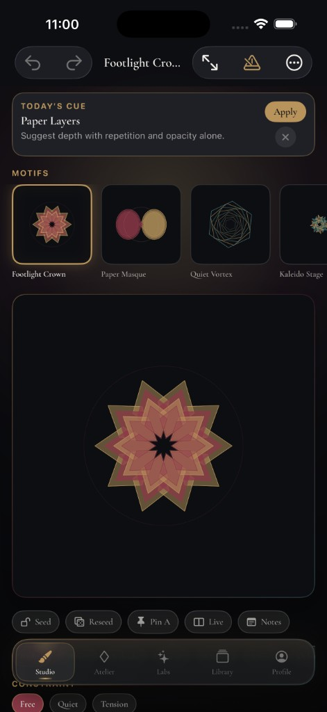
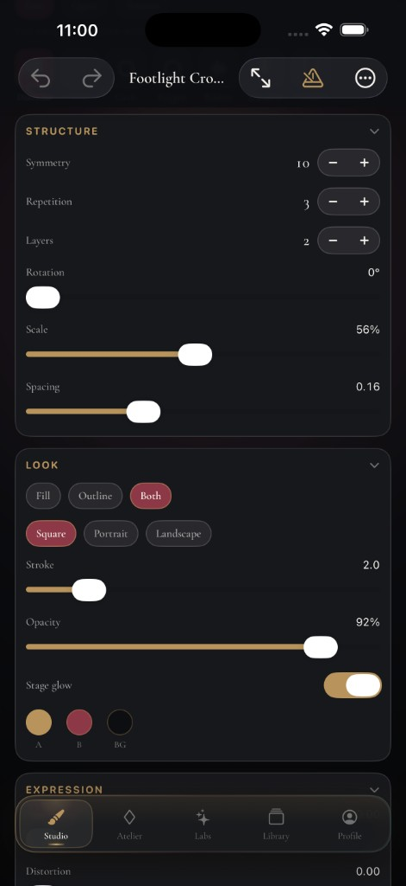
02 · Atelier
Motif library
Curated starting compositions with kinetic previews. Open any motif on the Studio stage — On Stage stays in sync with what you’re crafting.
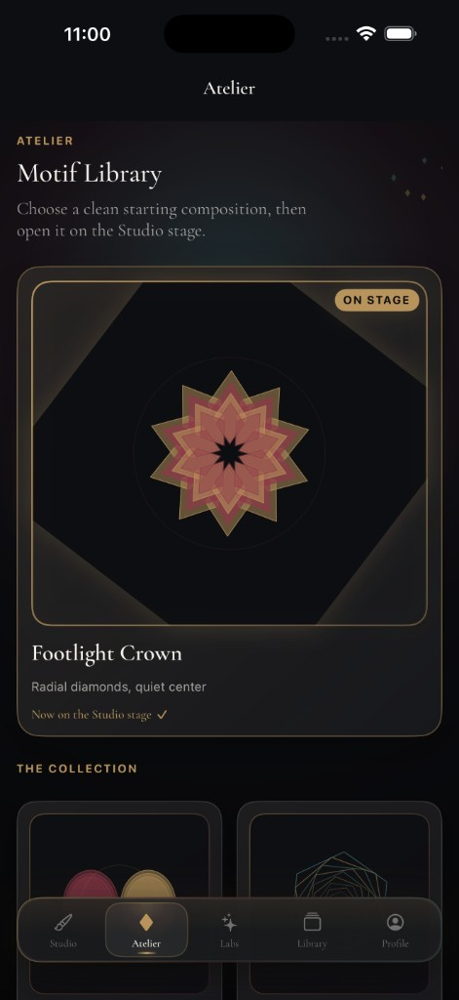
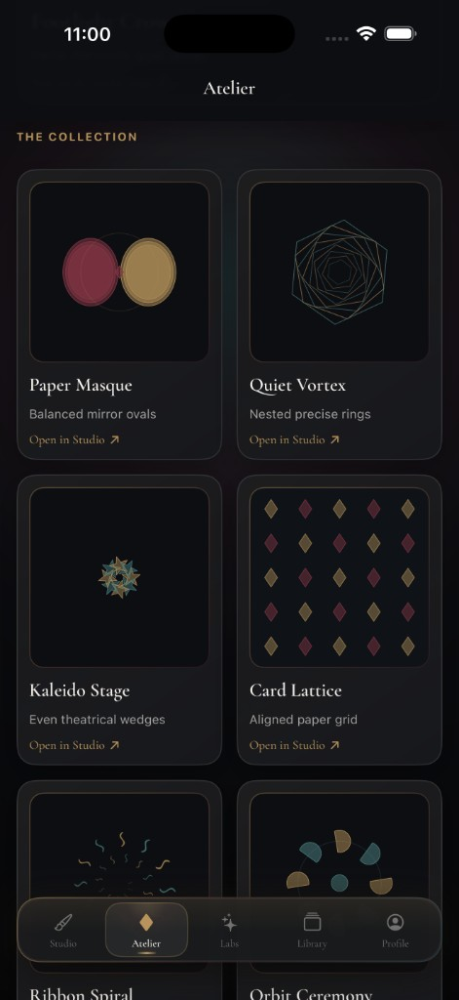
03 · Labs
Train the eye
Mini perception drills and practice stages with field notes — judgment training that is unique to Jestora, not another motif shelf.
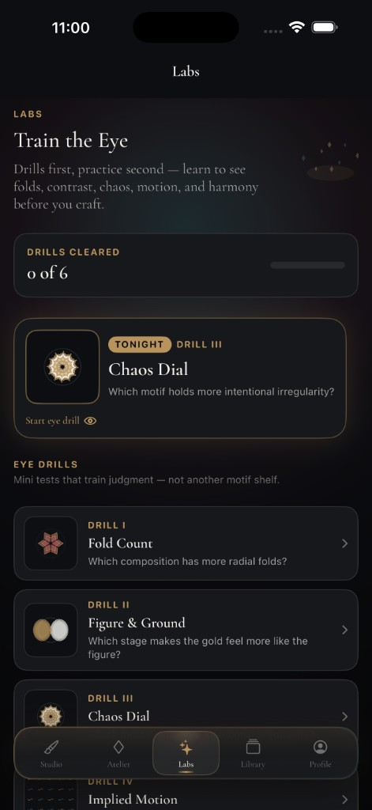
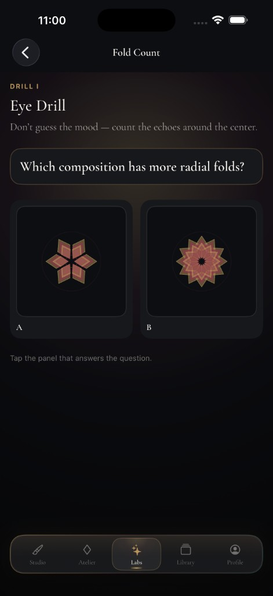
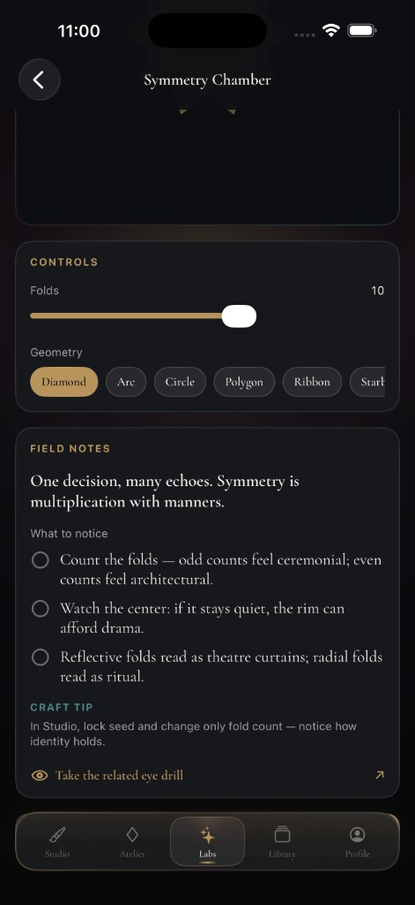
04 · Library
Private archive
Save, favorite, note, and reopen compositions. Pin tonight’s cue, seed starters when the shelf is empty — all on device.
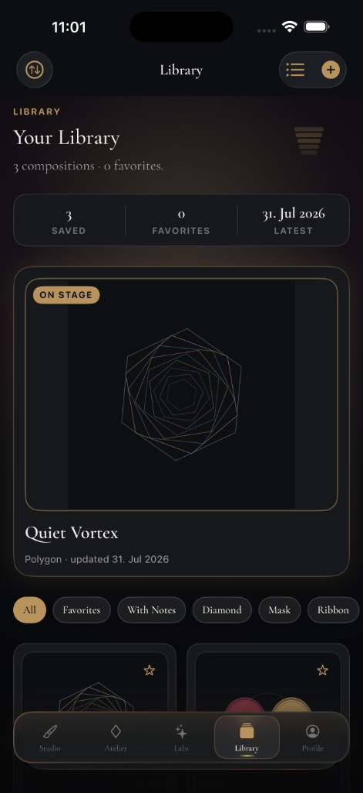
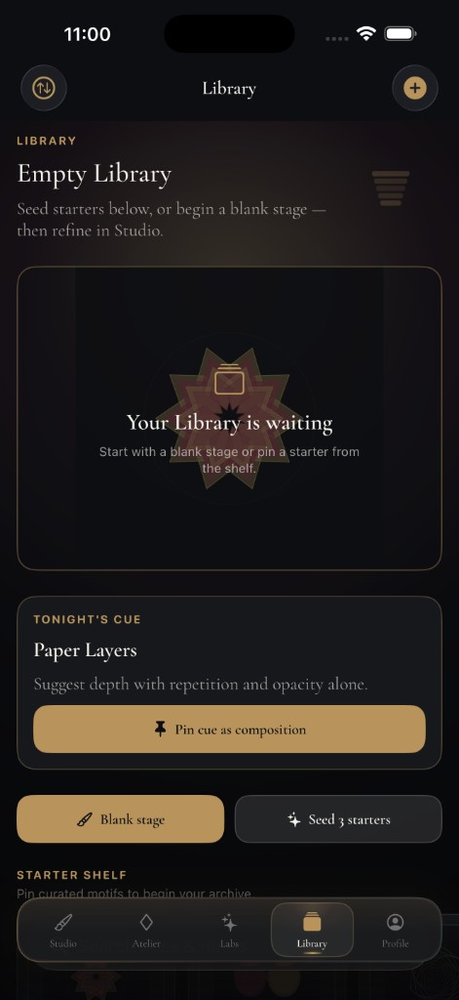
05 · Profile
Stage Preferences
Canvas ratio, haptic feedback, and motion intensity — set how ceremonial the house feels, without accounts or cloud settings.
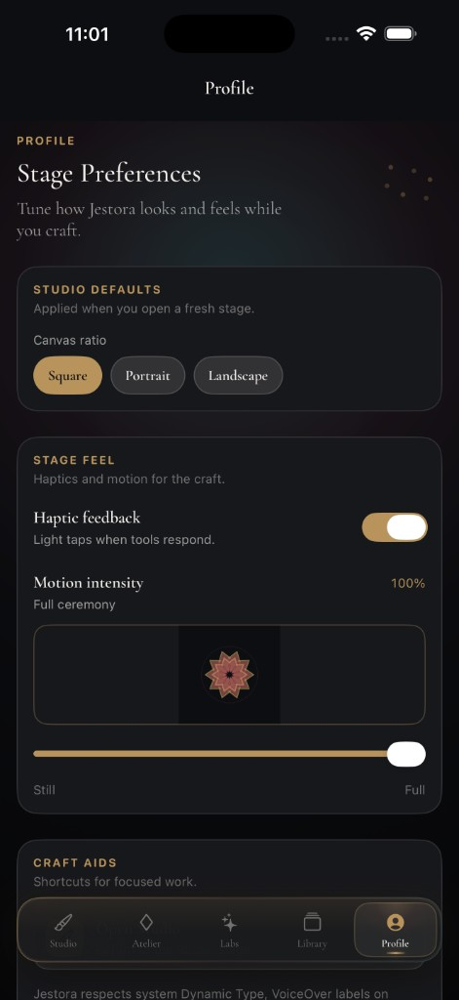
Prologue
Acts I–Finale
A short theatrical onboarding — then the house is yours.
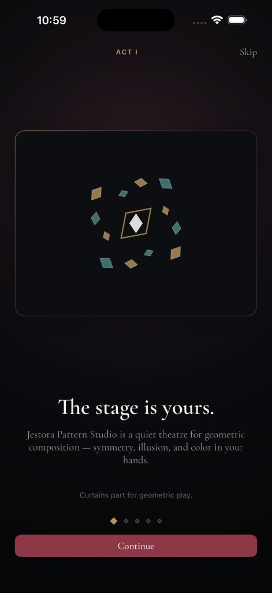
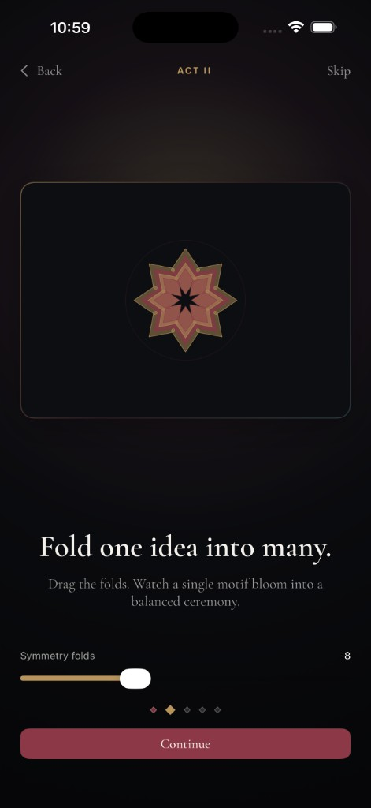
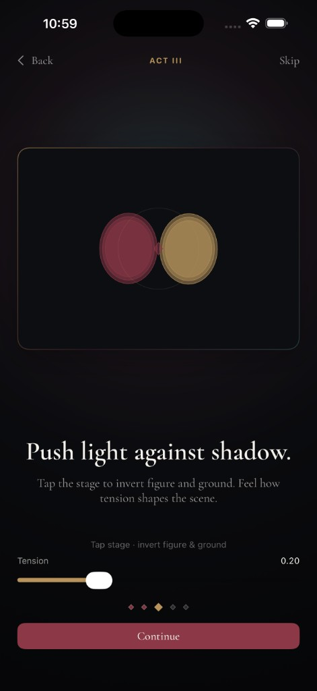
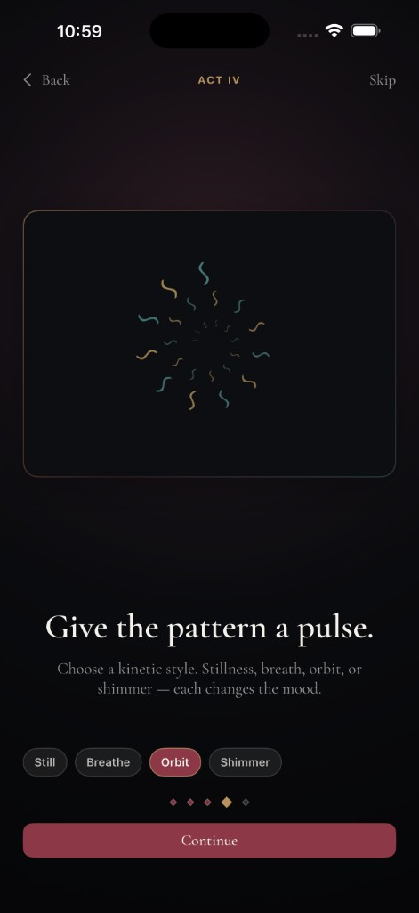
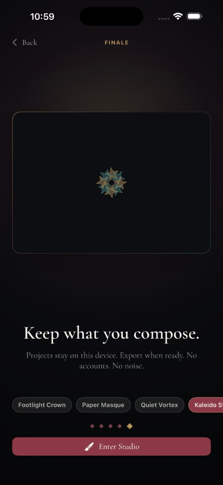
Finale